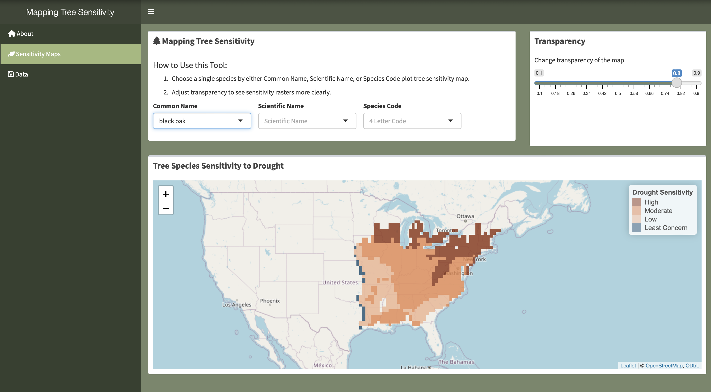

Master Project
These past 6 months have been an exciting time of working with Bren Professor Dr. Joan Dudney and 3 amazing Bren Master students to understand how tree sensitivty will look in the future in response to conditions of cliamte change. Digging deep into dendrochonology, linear regression and spatial analysis has been an exciting opportunity to showcase and put an end my Master career. Our goal was to map intra-species tree sensitivity to drought and create an interactive dashboard for local stakeholders to use out tool to target conservation efforts.
Tools Used
Tree Sensitivity Background
Forests cover approximately 30% of Earth’s land surface, absorb more carbon than all other terrestrial ecosystems, and provide trillions of dollars’ worth of ecosystem services (Food and Agriculture Organization of the United Nations, 2005). However, forests are increasingly threatened by climate change-induced shifts in drought frequency and severity. As temperatures inceases, it is critical to develop effective management strategies and identify techniques to prioritize management interventions. For example, developing cutting-edge models that can identify regions within a species’ range that are more vulnerable to drought can bolster restoration efforts, particularly for threatened species and species exposed to frequent droughts.
Mapping Tree Sensitivty Dashboard
The Mapping Tree Sensitivity Dashboard assses species-specific sensitivity to drought by quantifying variation in drought-sensitivity across tree species’ ranges. This localized information is citical for land managers to develop targeted drought-adaptation strategies. By analyzing variation in drought-sensitivity for 26 tree species, we demonstrate that th eimpacts of drier conditions vary by species and across species’ ranges. Our findings suggest that effective management strategies will need to consider species-level variation in drought sensitivity to sustain ecosystem services under climate change.
We hope this dashboard can act as a tool for land management partners to identify regions where management interventions may be needed under climate change
Data
This workflow builds off the existing framework developed by our client Dr. Joan Dudney, and her colleagues Dr. Robert Heilmayr, and Dr. Frances C Moore. Original code scripts and available at the following repository: GitHub Repository - Treeconomics
Raw data was accessed from the following public sources:
- Tree ring data - International Tree Ring Data Bank
- Date of Access: 2020-07-05
- Version: ITRDB v.7.22
- Climate data - Terra Climate
- Date of Access: 2024-04-02
- Version: Annual data (1958-present)
Reinterpreting Tree Sensitivty Scales
A live website of the dashboard is hosted by the Bren School of Environmental Management. Visit our live dashboard here
Within the dashboard, we used the R {leaflet} package to plot the interactive maps. The coordinate reference system is set to WGS84. The original sensitivity maps had a continuous scale of sensitivity ranging from negative to postive numbers. In order to increase interpretation of sensitivity maps, the categorical bins and orange-blue color palettes were create in order to signal sensitivty or non-senstivty. Therefore, any positive values of sensitivty mean these are species of little to no concern. The Negative scale was divided into quantiles of High, Moderate, and Low Sensitivty which takes in either three or four colors depending on the levels of sensitivity found in the dataset.
Dashboard
The Interactive Dashboard was built using R, R {Shiny} package, and {Leaflet} package. The intention of this dashboard is too choose a tree species of interest either by species code, common name or scientific name, and map the raster map of sensitivty values for each map. You can see how sensitivty ranges from tree to tree. Another feature I added was changing map tiles and transparency to better visualize the raster maps.
Below is a short video of our dashboard.

Project Documentation
Spatial Analysis Mapping Repository